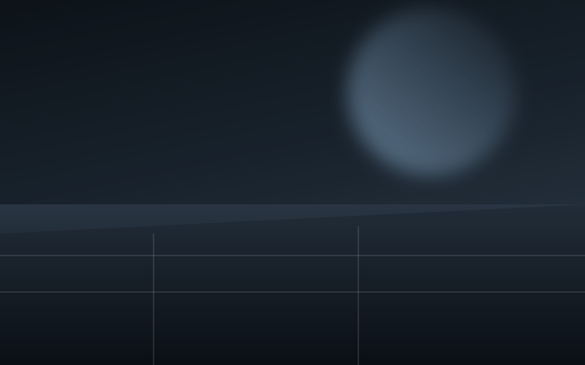
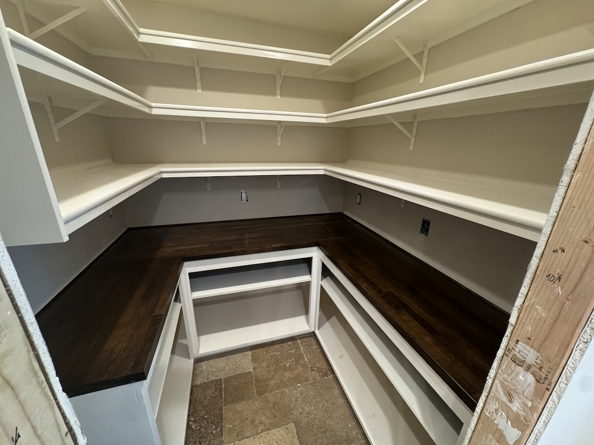
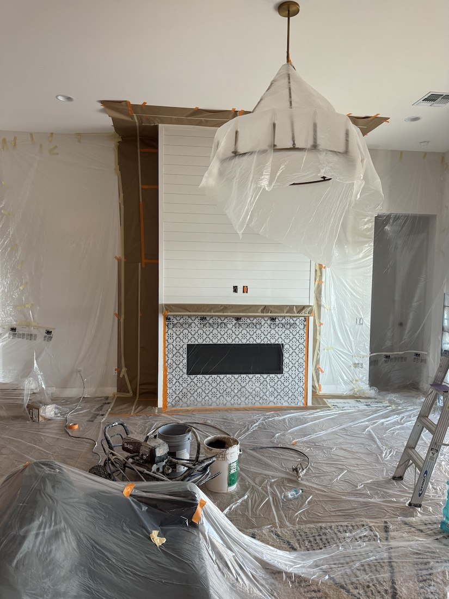
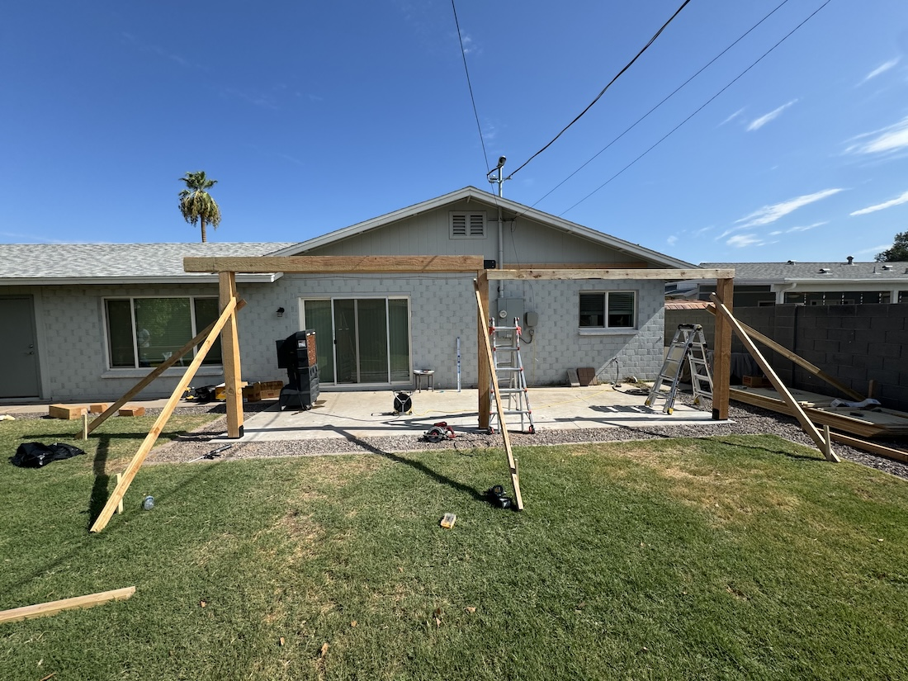
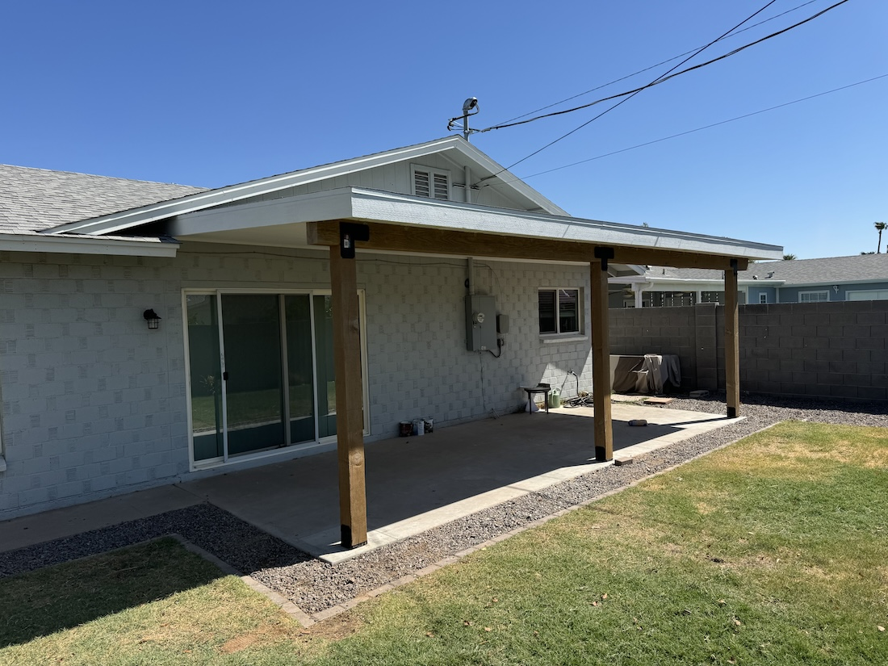
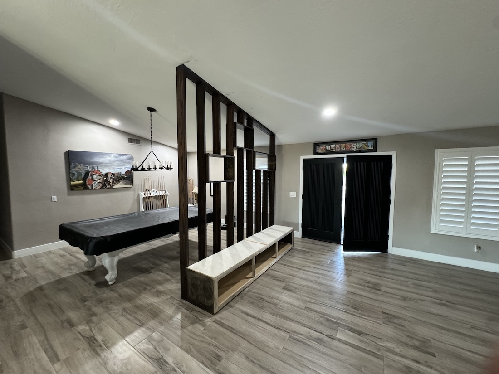
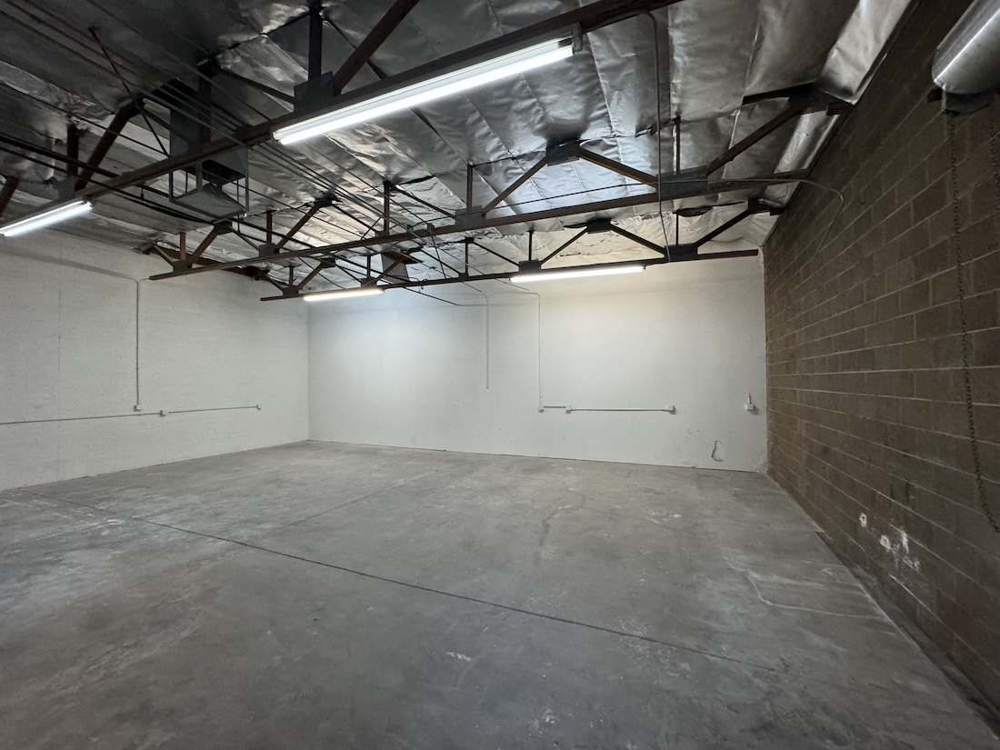

Driveways & aprons
Compacted sub-base, fibre or mesh reinforcement, 4000 psi mix and saw-cut joints placed on the panel layout, not by eye.
Price a drivewayConcrete & flatwork in {{CITY}}, {{REGION}}
Driveways, slabs and structural pours with documented sub-base prep, real control joints and a finish that will not spider-crack through a {{REGION}} summer.

What we pour
We do not sub out the prep. The crew that grades and sets steel in {{CITY}} is the crew that finishes the pour.
Compacted sub-base, fibre or mesh reinforcement, 4000 psi mix and saw-cut joints placed on the panel layout, not by eye.
Price a drivewayVapour barrier, rebar mat on chairs and a laser-screeded finish flat enough for a lift or a shop floor coating.
Spec a slabFormed and inspected footings for additions and outbuildings[[NEED:COUNTY]] across {{COUNTY}}[[/NEED]].
Book footingsPublic-facing walks, ramps and detectable warning panels to municipal spec.
Get walk pricingBroom, exposed aggregate, stamped and integral colour, sealed and documented for maintenance.
See finishesSaw cutting, section replacement and honest advice when a patch beats a tear-out.
Assess a slabRecent pours






From open forms to cured slab
This is the pour homeowners in {{CITY}} judge us on. Pull the divider across — left is the pour in progress with forms and rebar on site, right is the cured, jointed slab we hand over.
How a pour runs
We check grade, drainage and access, then tell you where water will actually go after the pour.
Thickness, mix strength, reinforcement, joint plan and finish, all itemised on one page.
Excavation, compaction in lifts, vapour barrier and reinforcement set on chairs — inspected before concrete is ordered.
Placed, screeded, floated and cut on schedule, with joints spaced to the slab thickness.
Cure applied, joints checked at seven days, and sealing scheduled where the finish calls for it.
Who is on the truck
[[NEED:OWNER_NAME]]{{OWNER_NAME}} runs[[/NEED]][[NEED:!OWNER_NAME]]The crew behind[[/NEED]] {{BUSINESS_NAME}} on one conviction: almost every failed slab[[NEED:COUNTY]] in {{COUNTY}}[[/NEED]] failed underneath, before a single yard of concrete arrived. So the crew compacts in lifts, sets steel on chairs instead of pulling it up mid-pour, and cuts joints on a plan drawn before the truck backs in.[[NEED:LICENSE]] License {{LICENSE}} is current,[[/NEED]] mix tickets stay with the job file, and if a pour does not meet the spec we wrote, we replace the panel.
Client feedback
★★★★★
Third summer on the driveway and there is still not a crack outside the joints. They cut them the day of the pour, not a week later.
★★★★★
They showed me the compaction and the rebar before ordering concrete. First contractor who wanted me to look underneath.
★★★★★
Shop slab is flat enough for the lift. The finish crew stayed until dark to get it right.
Before you pour
Four inches over compacted base for cars, five to six with heavier reinforcement where trucks or RVs park. We spec it on the quote.
Foot traffic at 24 to 48 hours, cars at seven days, heavy vehicles at 28 days once the mix reaches full strength.
Concrete moves. Control joints decide where. Cracks outside our joint plan within the warranty are ours to fix.
Yes for structural pours and right-of-way work in {{CITY}}. Plain replacement flatwork usually needs none — we confirm before quoting.
Colour never matches exactly on old concrete. We will show you the closest realistic finish before you commit.
Where we work
Search the way your neighbours do — the work plus the place. Each line below is the same crew and the same written price.
Budget, handled
Approved-credit payment plans are available on qualifying work, so a full pour does not have to wait for a lump sum. Terms and the monthly figure are printed on your written quote — we do not quote a payment before we have priced the job.
Pour schedule
Send the dimensions and what the slab has to carry. You will get a spec, a price and a realistic date — not a range and a deposit request.